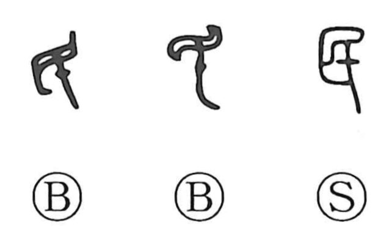

民

Kun: tami, hito | On: min
people ・ subjects ・ person
Explanation
In the bronze inscriptions, 民 depicts an eye being pierced—a vivid sign of blinding. From this image, the character first referred to a person whose sight had been taken and who served as an attendant in sacred rites. The same background informs 臣, likewise a blinded attendant to the gods; together they later formed 臣民, “subjects,” those who follow a lord. Over time, 民 shed its ritual nuance and came to mean the people at large, and by extension simply “a person.”